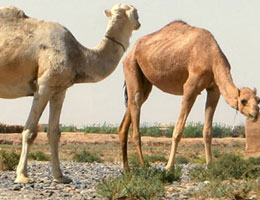
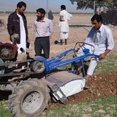

<div class="main">
    <div class="main_contents">
        <div>
            <!-- Nav tabs -->
            <ul class="tabs" role="tablist">
                <li role="presentation" class="active"><a href="#home" aria-controls="home" role="tab" data-toggle="tab">Home</a></li>
                <li role="presentation"><a href="#profile" aria-controls="profile" role="tab" data-toggle="tab">Profile</a></li>
                <li role="presentation"><a href="#messages" aria-controls="messages" role="tab" data-toggle="tab">Messages</a></li>
                <li role="presentation"><a href="#settings" aria-controls="settings" role="tab" data-toggle="tab">Settings</a></li>
            </ul>
            <!-- Tab panes -->
            <div class="tab-content">
                <div role="tabpanel" class="tab-pane active" id="home">
                <p>Home</p>
                </div>
                <div role="tabpanel" class="tab-pane" id="profile"><p>profile</p></div>
                <div role="tabpanel" class="tab-pane" id="messages"><p>Messages</p></div>
                <div role="tabpanel" class="tab-pane" id="settings"><p>Settings</p></div>
            </div>
        </div>
              <h1>Afghan Ag</h1>
              <p>eAfghan Ag "provides credible relevant information to those helping farmers in Afghanistan".</p>

              <p>e-Afghan Ag is supported by USAID. UC Davis is the lead institution. Over 70 institutions have contributed content. e-Afghan Ag is considered the most comprehensive collection of practical information available to help the farmers of Afghanistan. The project started with USAID funding managed through USDA. </p>
        <div id="main-boxes">
              <div class="main-box">
                <a href="/fruits-nuts-vegetables">
                  <h2>Fruits, Nuts & Vegetables</h2>
                  <h2>میوه جات، مغزباب و سبزیجات</h2>
                  
                </a>
              </div>
              <div class="main-box">
                <a href="/grain-field-crops">
                  <h2>Grain and Field Crops</h2>
                  <h2>نباتات مزروعی وغله جات</h2>
                  
                </a>
              </div>
              <div class="main-box">
                <a href="">
                  <h2>Pest Management</h2>
                  <h2>آفات نبابی</h2>
                  
                </a>
              </div>
              <div class="main-box">
                <a href="">
                  <h2>Livestock</h2>
                  <h2>مالداری</h2>
                  
                </a>
              </div>
              <div class="main-box">
                <a href="">
                  <h2>Irrigation & Natural Resource Management</h2>
                  <h2>آبیاری و اداره منابع طبیعی</h2>
                  
                </a>
              </div>
              <div class="main-box">
                <a href="">
                  <h2>Other Topics</h2>
                  <h2>عنوانهای دیگر</h2>
                  
                </a>
              </div>
              <div class="main-box">
                <a href="">
                  <h2>Country Info</h2>
                  <h2>معلومات کشور</h2>
                  
                </a>
              </div>
              <div class="main-box">
                <a href="">
                  <h2>Educational Materials</h2>
                  <h2>مواد علمی</h2>
                  
                </a>
              </div>
      </div>
    </div>
</div>
